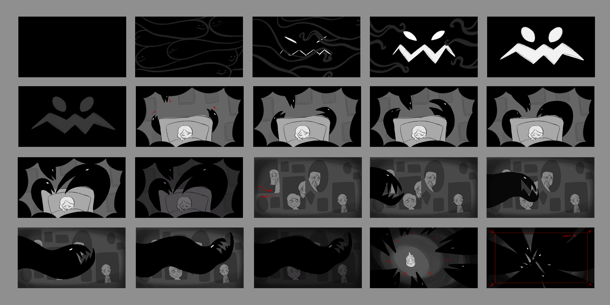
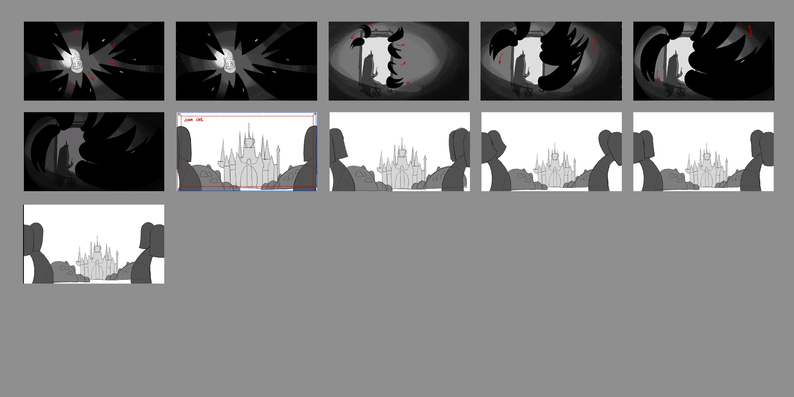
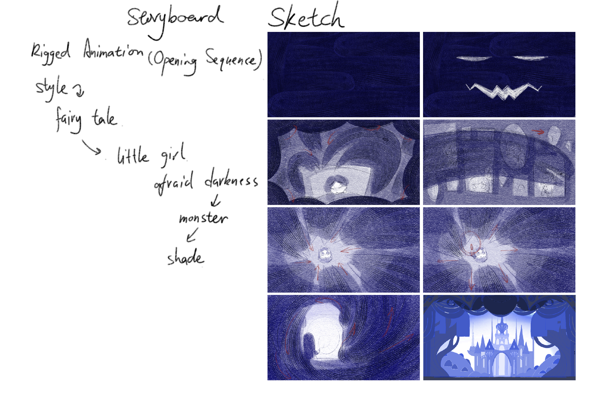
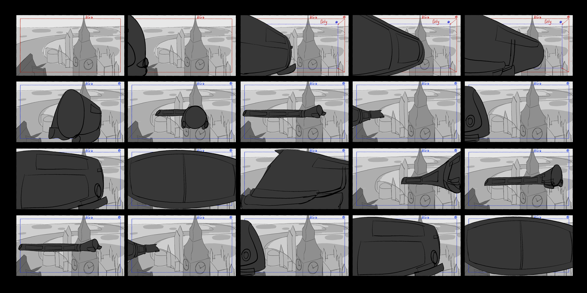
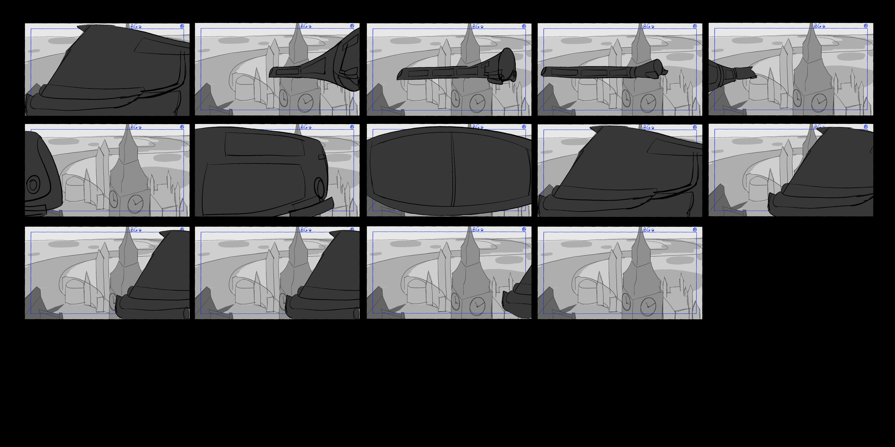

Rigged Animation (Opening Sequence)
At the beginning of a fairy tale, a little princess uses a bright light to drive away the shadow monster that frightens the children.
Storyboard


Process

Time Train (2D Transition Animation)
People Company
A time-traveling train appears above cyberpunk London, circles overhead, and roars past.
Storyboard


独立动画（二维逐帧动画）
小女孩四处点灯，将房间照亮以获得安宁，却忽然听见一处漆黑的房间里传来声音，她走进去....